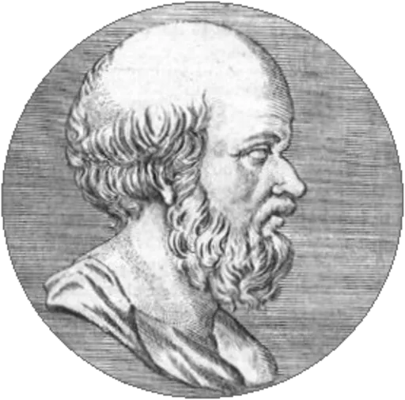

Principais influencias
Pessoas que tiveram diversas influencias no mundo dos astrônomos.

Eratóstenes
Matemático, Astrônomo e Geógrafico

Nicolau Copérnico
Astrônomo e Matemático

Johannes Kepler
Matemático
As pessoas que mais influenciaram o mundo dos astrônomos.